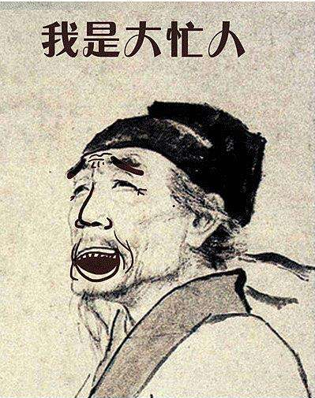
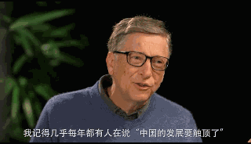
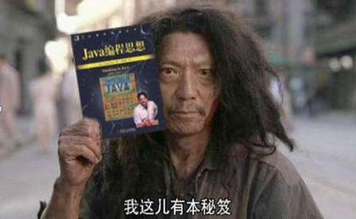
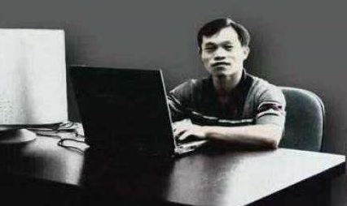

最近几个月很忙，忙着当奶爸，忙着做加班狗，忙着补裤裆学技术……以至于快忘了要思考人生了！

古人立志穷极一生追求“立德”，“立功”，“立言”，以求不朽，为万世所景仰，为后人所传颂，实现人生的意义。立德者，为生民立命，为天地立心：如周公旦，周公吐哺，天下归心；如苏武，北海牧羊、持节不屈；如诸葛亮，鞠躬尽瘁，死而后已；如周恩来，克己奉公，爱民如子。立功者，为万世开太平：如秦始皇，横扫六合，书同文，车同轨；如汉武帝，开疆扩土，大汉扬威；如唐太宗，大唐盛世，光芒万丈；如毛主席，开天辟地，恢复中华。立言者，为往圣继绝学：如老子，道法自然，创立道家；如孙武子，《孙子兵法》，名扬千古；如司马迁，一家之言，《史记》留芳。亦有诸如孔子、王阳明、曾国藩这般圣贤，三不朽均有建树。
有理想的人，眼睛是有光芒的，古人这点或许是幸运的，几千年来文明的延续，赋予了一代又一代人以天下为己任的崇高使命。
而我们IT人呢？我们的使命和人生追求又在哪里呢？我们又如何来看待IT人的“立德”、“立功”、“立言”三不朽呢？
IT人的“立功”，我想就是开发影响全人类的产品，改变人类的生活方式吧。譬如比尔·盖茨，创立了微软，让操作系统走向千家万户，为计算机的普及作出了卓越的贡献，历史教科书上把他列为第三次科技革命的代表，这是怎样的功绩？譬如乔布斯，活着就是为了改变世界，创立了世界上市值最高的公司——Apple，开创了智能手机时代。拉里·佩奇、杰夫·贝索斯、马克·扎克伯格、马化腾，雷军等都创立了自己的企业，让互联网走向世界的各个角落。还有张小龙、王坚、张志东等都通过自己的技术，开发了知名的产品，撑起了一个企业。这些人都是技术出身，最终都通过自己的技术，改变了整个世界，改变了人们的生活，我想，一个IT人的“立功”，大概应该就是这样的吧。

IT人的“立言”，我想应该就是创立一门学问，推行一种思想吧。如冯·诺依曼，现代计算机之父，如今我们现在使用的计算机，都来源于他的设计，任何一本介绍计算机历史的书籍都绕不开这个人的名字。如图灵，计算机科学之父，人工智能之父，他的大名让全世界计算机工作者膜拜， 图灵奖以他命名，全世界很多和计算机相关的事物都想办法趁“图灵”的热度。丹尼斯·里奇（Dennis M Ritchie），C语言之父，Unix之父，不错，他通过设计了一门影响力巨大的开发语言而被封神了。李纳斯·托瓦兹（Linus Torvalds），当今世界最著名的电脑程序员、黑客，也是无人不知无人不晓，开发设计的GitHub、Linux开源为全世界所使用，深刻地影响着全世界。理查德·马修·斯托曼，提出了自由软件这一概念，通过自由软件运动，赋予了软件强大的生命力。还有一些大神通过写书也影响着无数的IT人，《人月神话》、《Java编程思想》、《代码整洁之道》、《C程序设计语言》（Dennis M. Ritchie等著）、《代码大全》等，无不是作为程序员们的《圣经》一般存在着，影响着一代又一代的程序员们。

IT人的“立德”，我想应该是：像信徒一样，传播着对IT的信仰；像导师一样，对后辈谆谆告诫；像圣人一样，胸怀大局，不计个人利益得失！古人说“大上有立德，其次有立功，其次有立言”，三不朽中，“立德”最难，所以也最难举例。这里，我想提一提几个人，李开复，时刻关心着中国大学生的成长，著名的七封《给中国学生的信》，以及创立“我学网”等事迹，应该都算得上在“立德”吧。比尔·盖茨，大慈善家，将自己累积的巨额财富又回馈给全世界，也算得上是“立德”吧。 说到这里，我特别想提一个人，张孝祥！李开复、比尔·盖茨他们的“立德”，并不是针对IT界的，而张孝祥却是全心全意在为中国的软件事业而努力着。“为千万人少走弯路而著书、为中华软件之崛起而讲课”是他的人生格言，他一直践行着这句格言，也一直在帮助着千千万万的软件人成才。虽然他的培训是收费的，但他的付出早已经超出了一个普通商人的作为，还一度恳请李开复加盟来共同完成这个愿望，总之，他是值得我们IT人尊敬的。可惜，他英年早逝了，现在时常想起当年大学时班主任给我的大量他的java教学视频，以及他的教学光盘，不免有些伤感。他是湖北公安人，是我的老乡，为这样的老乡而骄傲，但我还是希望，愿他来世不再从事软件行业！（容我贴张他的照片怀念一下他）

所以，我一度在敲打我自己，我在追求什么？我们这样普普通通的IT人又在追求什么？我们夜以继日加班是在希望有一天也能“立功”改变世界，还是仅仅希望多拿点工资？我们勤勤恳恳写博客写书是希望“立言”传播技术，还是仅仅想着多赚点稿费？我们毫不吝啬分享自己的经历是希望“立德”以教导读者少走弯路，还是仅仅想吸几个粉？
但愿我们每个IT人心中都有一个自己的答案！